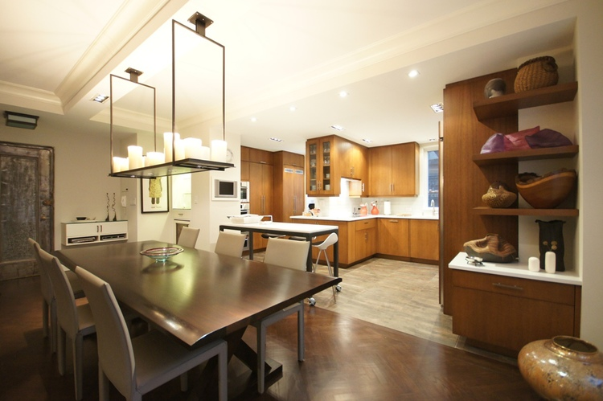

Sag Harbor
Domino

Kean

Krugman

Parisa

Romano

Renovating apartments, townhouses and vacation homes in New York City and
the Hamptons for over 25 years.
Welcome to Ray Romano Contracting, an award-winning boutique construction company with a truly personal approach. We specialize in
home renovations, including gut renovations and multiple-unit combinations, that help people in the Tri-state area achieve the space of
their dreams. From sprawling prewar apartments and lofts to homes in the Hamptons to Madison Avenue art galleries, we've transformed
every corner of Manhattan, Brooklyn, and beyond. Our team values your time and budget, approaching projects with the skill, charm and
wisdom that have made us the go-to contracting company for television personalities, professional athletes, New York City residents, and
now, you.
With over 30 years of experience, founder, president and contracting professional, Ray Romano, brings his passion, expertise and caring
personality to every job, big or small. Ray understands the physical and emotional toll a renovation can take and he puts his heart and soul into
every project to make the experience as personal as possible. From luxury condos to upper west side prewar apartments, he's there every step of
the way, guiding you on bathroom finishes, kitchen layouts and apartment configurations. Whether working with your selected licensed architect or
doing design-builds, Ray Romano Contracting will help you create the space of your dreams.
You may have seen Ray on TLC's Town Haul, The Oprah Winfrey Show, and Your World with Neil Cavuto, who said "we could use a man like Ray
Romano in congress!" He has also been featured on the pages of Domino magazine and The New York Times. He has regularly donated time and
material to GLAAD fundraising events and other community-focused non-for-profit activities. He is currently writing a book with expertise on
simplifying contracting.
Our New York City-based firm provides professional design/build services from initial concept planning and budgeting to the execution of all phases
of construction. Our proven project teams are hand-picked for you and include licensed architects, designers, and specialized artisans
depending on your needs. We also provide direct access to our preferred vendors for guidance and cost savings. Our extensive in-house staff
includes diverse trusted tradespeople including plumbers, electricians and craftsmen ensuring we never have to rely on subcontractors.
We are adept at dealing with the challenges of Co-op board negotiations and can facilitate easier, quicker approvals for any renovation. We're on
your team and with us there, we'll get the job done together.
"Ray Romano rocks. Listen to this: He did a complete GUT on an eight-room wreck in less than 8 weeks. I do not recommend it for anyone. It is CRAZY. But
we have little kids and we had no choice. Ray Romano and his team got it done! The place is beautiful!"
"Ray rescued us from a contractor job gone bad. He and his crew are great, neat and real artisans. We recommend him very highly and I bet before we know
it, there will be another "Everybody loves Raymond," but on HGTV or TLC!"
"Ray added value in ways that other G.C.s can't. Working with him is a pleasure. He more than doubled the value of my apartment through his gut
renovations. I would recommend him to any person looking to make home improvements."